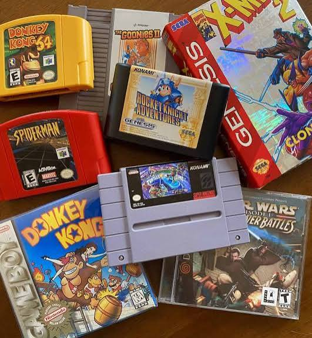
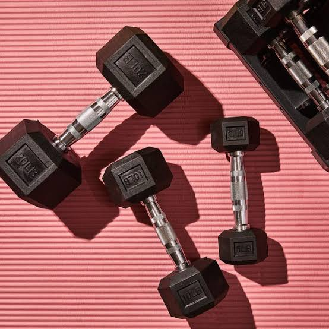
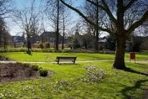

Informatica • 5 VWO
Pagina.io
Welkom op Pagina.io! Op deze website vind je informatie over verschillende onderwerpen binnen de informatica.
Wie ben ik?
Mijn naam is Khalil en ik zit op het Vlietland College in 5 VWO. Voor informatica heb ik deze website gemaakt om verschillende onderwerpen uit te leggen.
Mijn interesses
Gamen
Hier staat de tekst over gamen en waarom dit een van mijn interesses is.

Retro games
Hier staat de tekst over retro games en mijn interesse in oudere videogames.

Sport
Hier staat de tekst over sport en waarom ik hierin geïnteresseerd ben.

Vrienden
Hier staat de tekst over tijd doorbrengen met vrienden.